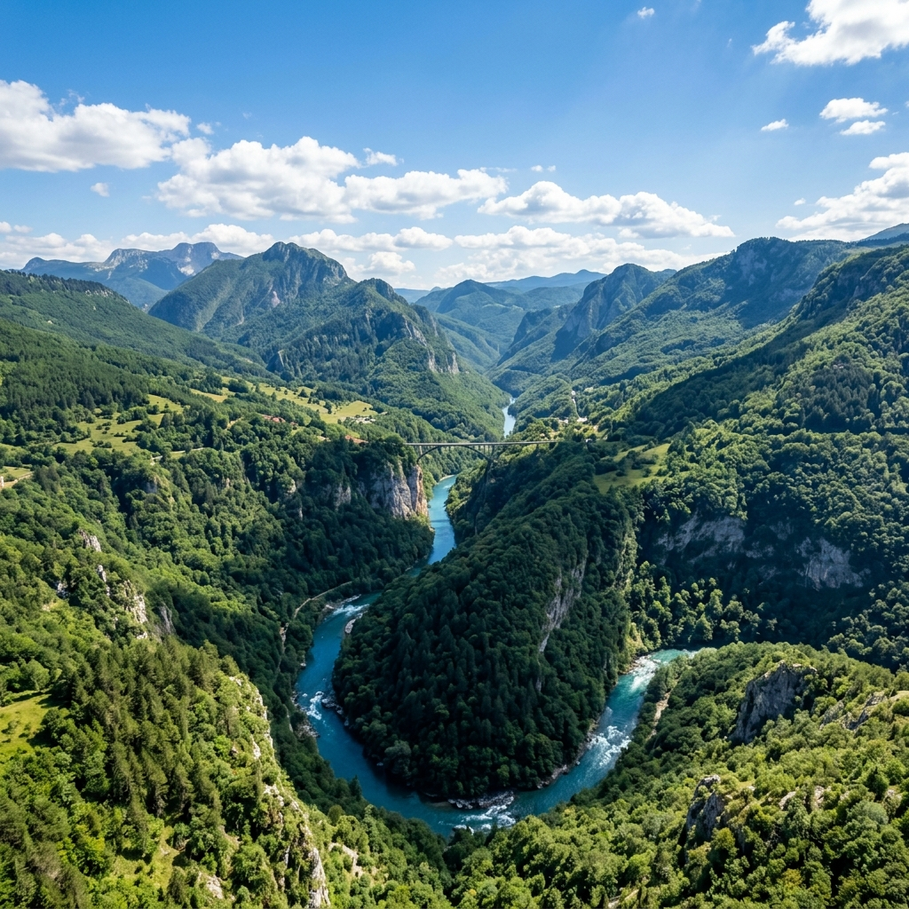
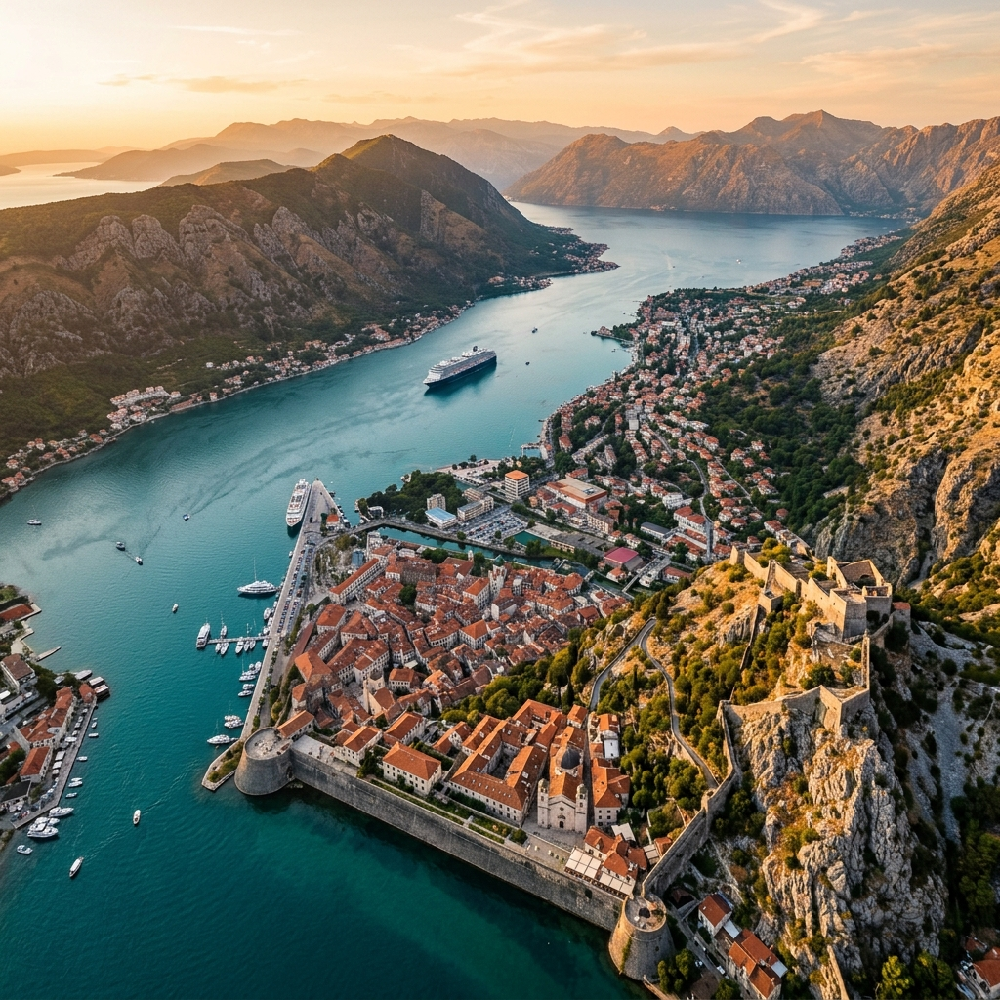
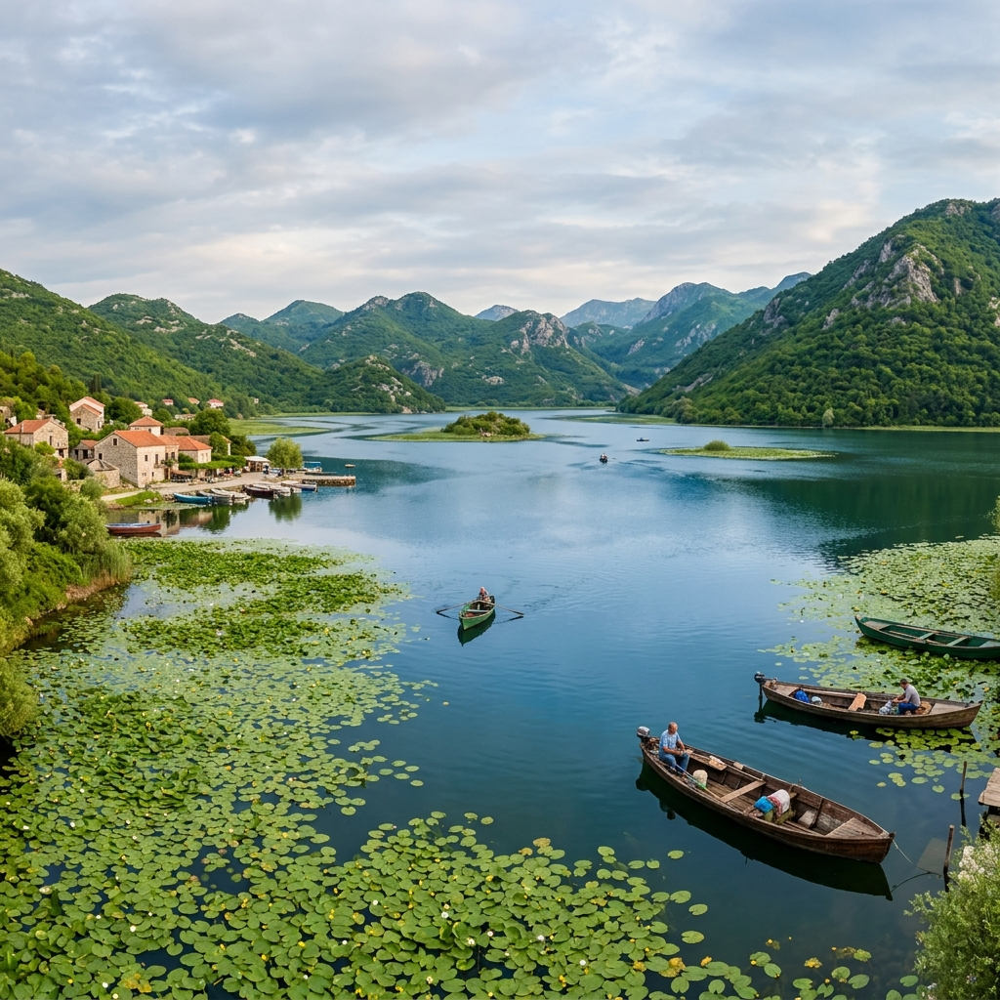
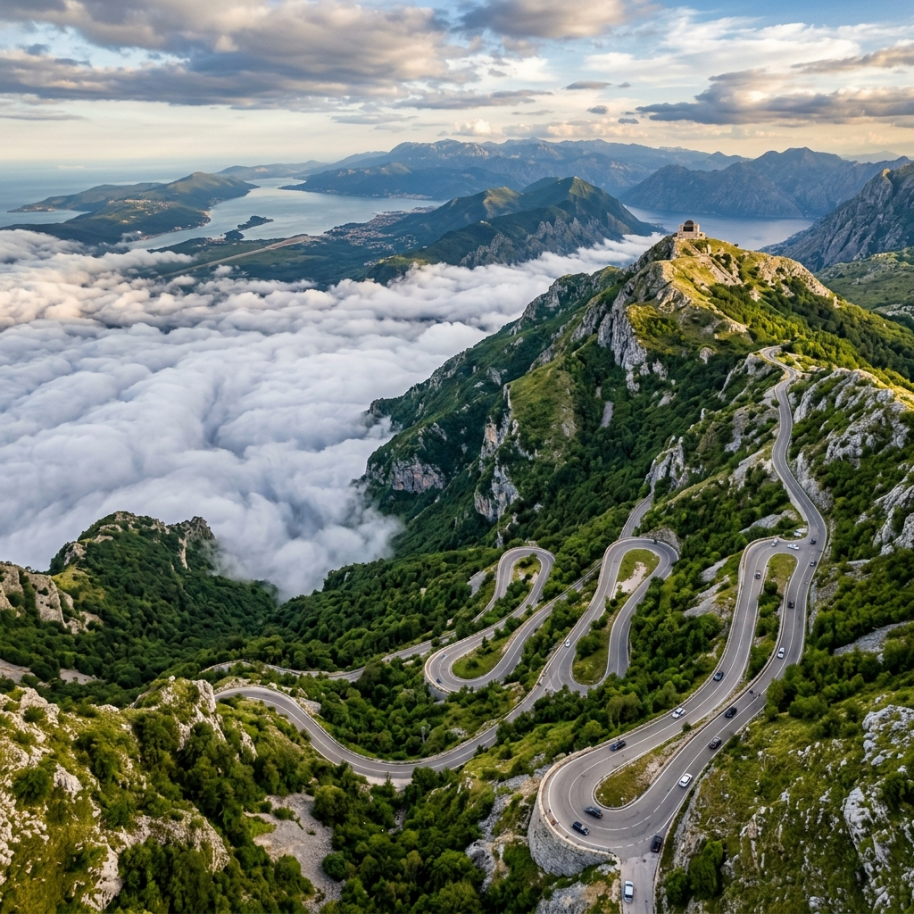
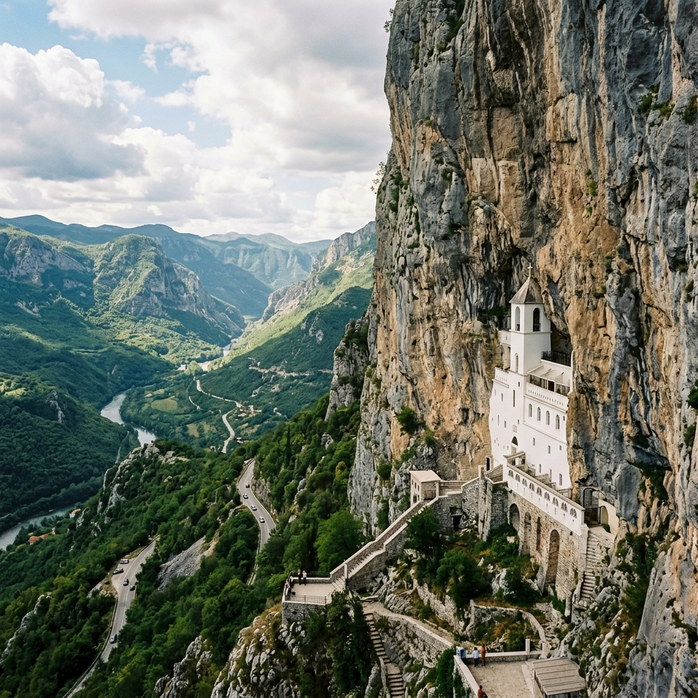
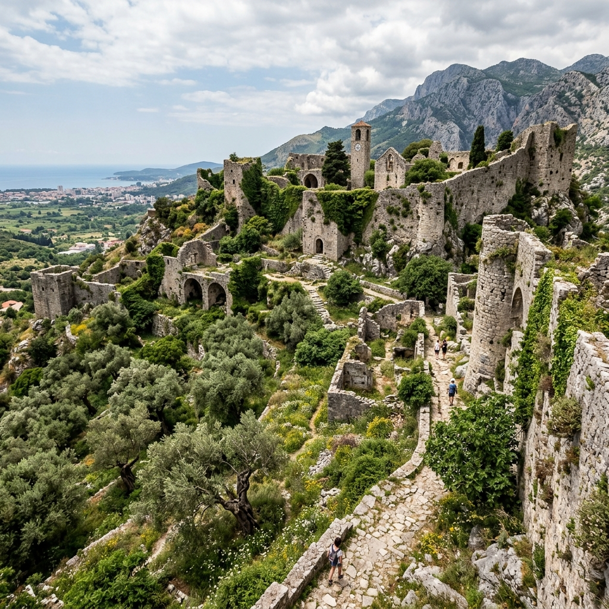

⭐ Самый впечатляющий
Дурмитор и каньон Тары
Самый впечатляющий маршрут Черногории
Самый глубокий каньон Европы и дикие горы в одном дне. Смотровая над каньоном, сосновый лес, альпийские озёра. Сезон: май–октябрь.
Однодневные маршруты на машине с личным гидом.
Выбираете, куда ехать — мы знаем, что показать.
Горы, каньоны, старые города у моря и места, о которых не пишут в путеводителях — за один день.
Формат
Мы не туристическое агентство. Мы не продаём пакеты.
Это однодневная поездка по Черногории — на машине, с живым гидом, по маршруту, который согласован под вас. Национальные парки, каньоны, старые города у моря, горные виды — выбираете то, что хочется увидеть. Мы знаем, где лучшая точка обзора, где остановиться на обед, куда пойти пешком и что за всем этим стоит.
Маршруты
Готовые однодневные маршруты из Будвы. Каждый можно адаптировать под вас.
По этим фильтрам маршрутов нет — попробуйте другой набор.

Самый впечатляющий маршрут Черногории
Самый глубокий каньон Европы и дикие горы в одном дне. Смотровая над каньоном, сосновый лес, альпийские озёра. Сезон: май–октябрь.

Морская история и виды, которые остаются навсегда
Старый город внутри стен, подъём на крепость, маленький остров посреди залива — и тот самый вид, ради которого люди едут в Черногорию снова.

Природа, тишина и черногорское вино у воды
Самое большое озеро Балкан. Лодка по воде, пеликаны, виноградники и локальный обед у воды. Маршрут для тех, кто хочет тишины и живой природы.

Над Черногорией — буквально
Серпантин в облаках, 461 ступенька на вершину и вид на всю страну. Старая столица Цетинье — история без туристической шелухи.

Самое необычное место Черногории
Монастырь, вырубленный прямо в отвесной скале. Место паломничества и одновременно — одно из самых сильных визуально мест страны. Работает круглый год.

История на юге страны
Руины средневекового города-крепости и самые старые оливковые деревья на Балканах — некоторым более 2000 лет. Маршрут для тех, кто хочет истории без суеты.
Не нашли то, что искали? Напишите нам — согласуем маршрут под вас.
Процесс
Никаких сложностей. От «хочу поехать» до «едем» — четыре шага.
Смотрите каталог и выбираете, что хочется увидеть. Или пишете нам — подскажем, что подойдёт под ваши интересы и даты.
Время отправления, точку встречи, пожелания по темпу и остановкам. Обычно это занимает одно сообщение.
Мы подтверждаем маршрут и дату. Оплата — при встрече или заранее, как удобно.
В назначенное утро гид забирает вас из отеля или с удобного места. Дальше — маршрут, дорога и Черногория.
Честность
Без скрытых платежей. Вы знаете заранее, за что платите.
Стоимость входных билетов минимальна. Мы предупреждаем заранее — никаких сюрпризов на кассе.
Впечатления
Каждый снимок — это чьё-то «вау». Каньон Тары с высоты. Котор в пять утра, когда туристов ещё нет. Закат над Скадарским озером.
Сюда привозят тех, кто хочет Черногорию настоящую — не ту, что из Instagram-геотега на пляже.
«Поднялись на крепость в Которе рано утром — вид на залив был только наш. Это именно то, чего хотелось.»
«Гид знал такие места, о которых нигде не написано. Мы видели настоящую Черногорию, а не открытку.»
«Дурмитор — это было сильнейшее впечатление за всю поездку. Спасибо, что уговорили туда поехать.»
Фотографии
Горы, каньоны, заливы — всё это вы увидите за один день. Снимки сделаны во время реальных поездок.